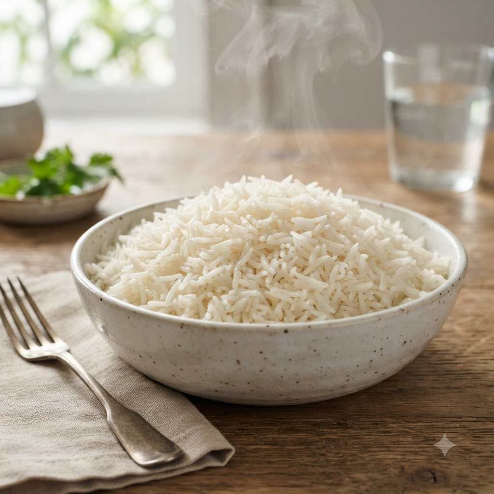

Plain Steamed Basmati Rice

Plain Steamed Basmati Rice
Chef Magic – Boil Auto 14 min — Serves 4
Gluten-Free • Vegan • No-Cook Finish • Everyday
🧑🍳 Chef Magic🍽 Serves 4
Prep ahead: Rinse the rice 2–3 times until the water runs clear, to wash off surface starch.
Ingredients
- 1.5 cups basmati or regular rice, rinsed
- 2.5 cups water
- 1/2 tsp salt (optional)
- 1/2 tsp oil or ghee (optional)
Method
1Add the rinsed rice, water, salt and oil (if using) to the jar.
2Select Boil (Speed 1–2, 100°C) and cook until the water is fully absorbed and the rice is tender.
3Rest covered for 5 minutes, then fluff gently with a fork before serving.
Tip: The everyday side for almost any dal or curry in this book — keep it simple and don’t skip the resting step.